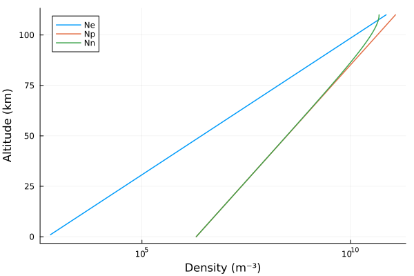
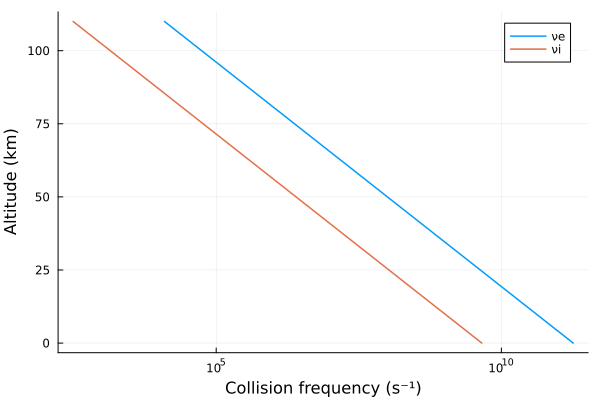
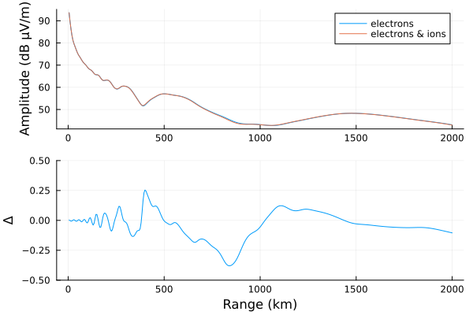

Multiple ionospheric species
This example demonstrates an ionosphere with multiple constituents–-not only electrons, but ions as well.
Background
As discussed in the background of Interpreting h′ and β, the propagation of VLF waves depends on the number density and collision frequency of charged species. Together, these two quantities describe the conductivity profile of the ionosphere. Not only electrons, but massive ions, influence the conductivity of the D-region. The influence of multiple species are combined by summing the susceptibility tensors for each species.
Implementation
There's nothing special about electrons in LongwaveModePropagator. In all of the other examples, the only ionospheric constituent is electrons, but they are represented as a Species type. LongwaveModePropagator let's you define multiple ionospheric Species and pass them as a Tuple or Vector to most functions that take the argument species.
Let's compare electrons-only and multiple-species ionospheres.
using Plots
using LongwaveModePropagatorThe Species type defines charge, mass, numberdensity as a function of altitude, and neutral collisionfrequency as a function of altitude.
We'll import the internally defined electron charge QE and mass ME for convenience.
using LongwaveModePropagator: QE, MEQE is literally the charge of an electron and is therefore negative.
QE-1.602176634e-19LMP also exports the function waitprofile for the Wait and Spies (1964) electron density, electroncollisionfrequency for the electron-neutral collision frequency, and ioncollisionfrequency for the ion-neutral collision frequency.
The Long Wavelength Propagation Capability (LWPC) supports built-in electrons, a positive ion, and a negative ion. Each of the ions have a mass of 58,000 electrons (approximately the mass of O₂).
Here we'll use waitprofile for the electron number density profile, but make up a not-very-realistic exponential profile for the positive ion.
Ne(z) = waitprofile(z, 75, 0.32)
Np(z) = 2e6*exp(1e-4*z)We define density of the negative ions to conserve charge neutrality.
Nn(z) = Np(z) - Ne(z)For plotting, we'll replace densities below 1 m⁻³ with NaN.
mask(x) = x < 1 ? NaN : x
z = 0:1e3:110e3
plot(mask.(Ne.(z)), z/1000, label="Ne", linewidth=1.5)
plot!(mask.(Np.(z)), z/1000, label="Np", linewidth=1.5)
plot!(mask.(Nn.(z)), z/1000, label="Nn", linewidth=1.5)
plot!(xlabel="Density (m⁻³)", ylabel="Altitude (km)",
xscale=:log10, legend=:topleft)
Here are the electron and ion collision frequencies:
plot(electroncollisionfrequency.(z), z/1000, label="νe", linewidth=1.5)
plot!(ioncollisionfrequency.(z), z/1000, label="νi", linewidth=1.5)
plot!(xlabel="Collision frequency (s⁻¹)", ylabel="Altitude (km)", xscale=:log10)
The Species:
electrons = Species(QE, ME, Ne, electroncollisionfrequency)
posions = Species(abs(QE), 58000*ME, Np, ioncollisionfrequency)
negions = Species(QE, 58000*ME, Nn, ioncollisionfrequency)We'll compare an electrons-only and electrons-ions ionosphere.
tx = Transmitter(24e3)
rx = GroundSampler(0:5e3:2000e3, Fields.Ez)
bfield = BField(50e-6, π/2, 0)
ground = GROUND[10]
ewvg = HomogeneousWaveguide(bfield, electrons, ground)
eiwvg = HomogeneousWaveguide(bfield, (electrons, posions, negions), ground)
Ee, ae, pe = propagate(ewvg, tx, rx)
Eei, aei, pei = propagate(eiwvg, tx, rx)
p1 = plot(rx.distance/1000, ae, label="electrons", ylabel="Amplitude (dB μV/m)")
plot!(p1, rx.distance/1000, aei, label="electrons & ions")
p2 = plot(rx.distance/1000, aei-ae,
ylims=(-0.5, 0.5), xlabel="Range (km)", ylabel="Δ", legend=false)
plot(p1, p2, layout=grid(2,1,heights=[0.7, 0.3]))
The influence here is minor; the difference is hardly above the noise floor of many VLF receivers. Also, running with 3 species increases the runtime over 1 species by ~50%.
This page was generated using Literate.jl.